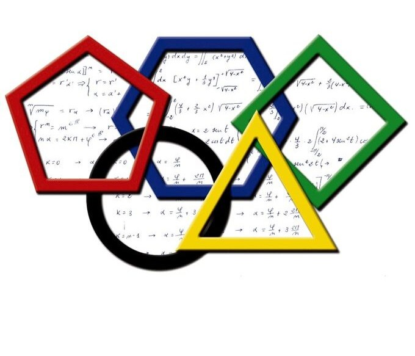
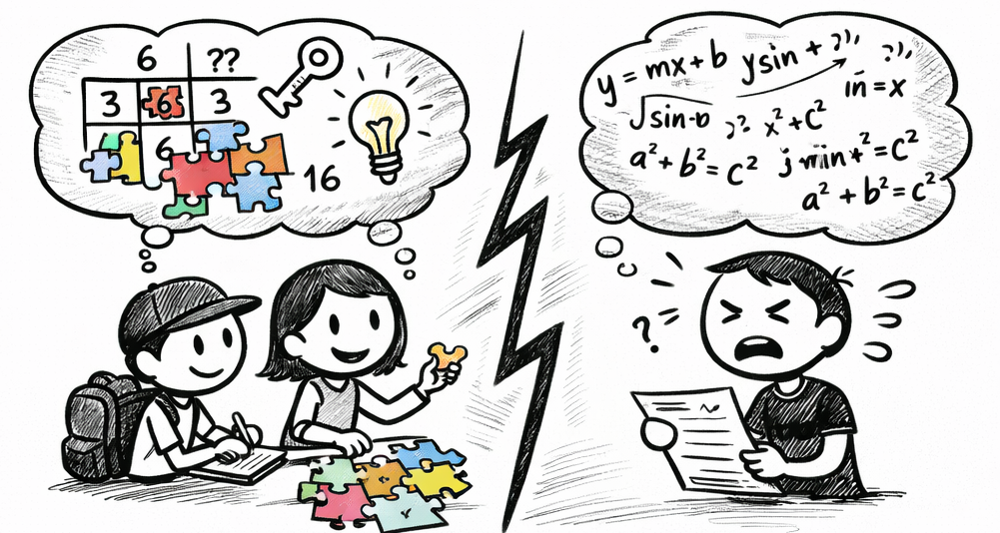
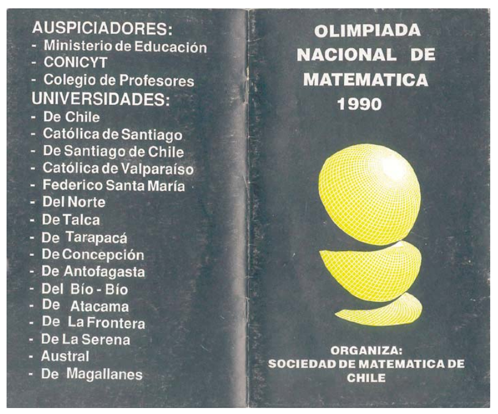
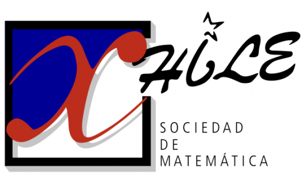
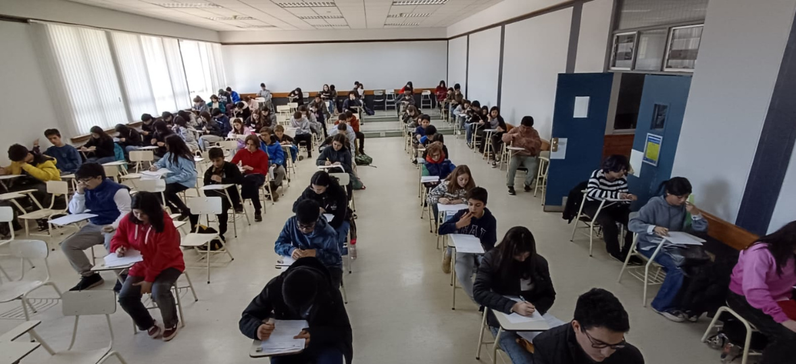
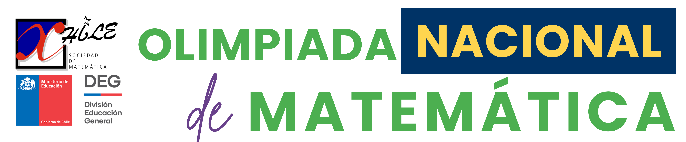
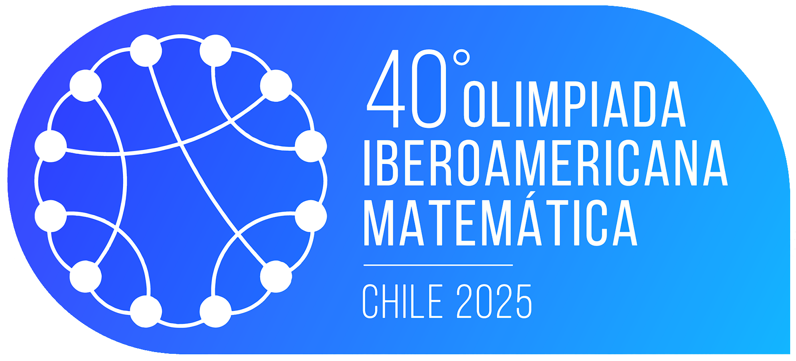
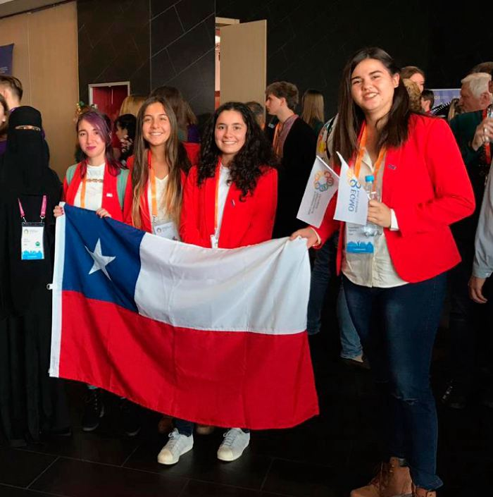
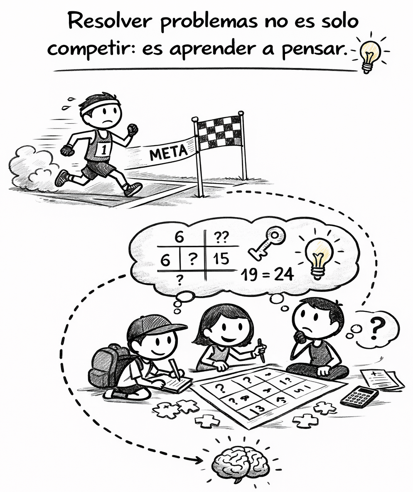
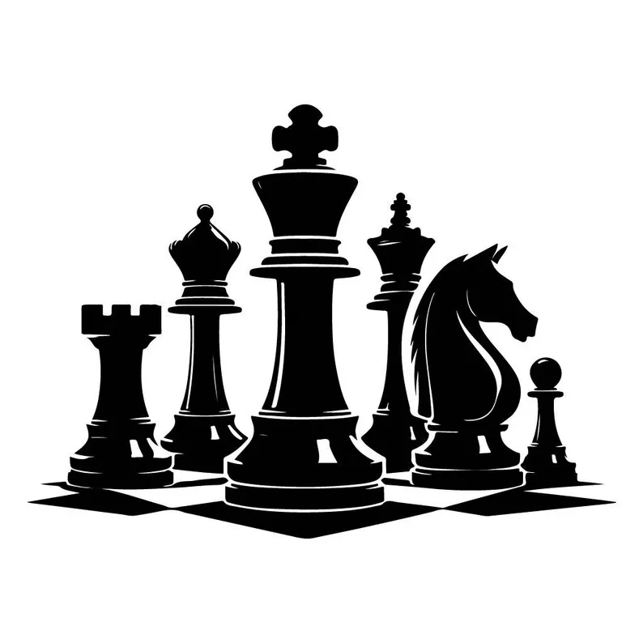

Warning in readLines(input_file): incomplete final line found on 'index.qmd'
Las Olimpiadas de Matemática en Chile constituyen una competencia académica anual de resolución de problemas, dirigida a estudiantes de enseñanza básica y media. Se iniciaron en 1989, bajo el nombre de Olimpiada Nacional de Matemática (u Olimpiada Chilena de Matemática), y desde entonces se han realizado de forma ininterrumpida.
Este certamen nació con un doble propósito:
- Fomentar el gusto por las matemáticas.
- Detectar y potenciar jóvenes talentos, ofreciendo un espacio de encuentro entre estudiantes y docentes apasionados por la disciplina.
Sin embargo, más allá de su carácter competitivo, las Olimpiadas Matemáticas plantean una pregunta de fondo, profundamente pedagógica:
¿Por qué algunos estudiantes disfrutan pensar problemas difíciles, mientras otros solo ven en la matemática un conjunto de fórmulas que memorizar?

Este post explora la historia y el sentido educativo de las Olimpiadas Matemáticas en Chile, abordando su origen, evolución, vínculos internacionales, objetivos formativos, impactos y debates pedagógicos asociados.
Contexto histórico: ¿por qué nacen las Olimpiadas?
A fines de la década de 1980, Chile vivía un período de renovación educativa y científica, en sintonía con experiencias internacionales ya consolidadas, como:
- La Olimpiada Internacional de Matemática (IMO), activa desde 1959.
- La Olimpiada Iberoamericana de Matemática (OIM), fundada en 1985.
Estas experiencias mostraron que las competencias matemáticas podían ser una poderosa herramienta para descubrir talento oculto en las escuelas y ofrecer desafíos intelectuales de alto nivel, muy distintos a los ejercicios rutinarios del aula tradicional.
En este contexto, un grupo de matemáticos chilenos impulsó en 1989 la creación de la Olimpiada Nacional de Matemática, coincidiendo además con el inicio de la transición democrática, cuando universidades y comunidades científicas recuperaban espacios de acción y liderazgo académico.

Instituciones involucradas y evolución del certamen
La organización de las Olimpiadas Matemáticas en Chile ha estado liderada desde su origen por la Sociedad de Matemática de Chile (SOMACHI), que desde 1989 coordina el certamen junto a académicos de diversas universidades del país, entre ellas:
- Universidad de Chile
- Pontificia Universidad Católica de Chile
- Universidad de Santiago
- Universidades regionales desde Arica hasta Punta Arenas
Con el tiempo, se consolidó una red de sedes regionales, lo que permitió descentralizar la participación y ampliar el acceso a estudiantes de todo el territorio.

El proceso contó además con el apoyo de:
- Ministerio de Educación (MINEDUC)
- Fundación Andes (especialmente en los años 90)
- CONICYT, a través de iniciativas de divulgación científica
Desde su primera edición, la Olimpiada ha crecido sostenidamente en cobertura, participación e impacto, dejando de ser una actividad de nicho para convertirse en un evento académico nacional.
Estructura general del certamen
| Aspecto | Descripción |
|---|---|
| Etapas del certamen | Etapa escolar → Prueba nacional clasificatoria → Gran Final Nacional |
| Niveles de competencia** | Nivel Menor: hasta 15 años Nivel Mayor: entre 16 y 18 años |
| Áreas matemáticas evaluadas | Álgebra, geometría, combinatoria y teoría de números |
| Nivel de exigencia | Exigencia conceptual significativamente superior al currículo escolar habitual |
| Participación | Miles de estudiantes participan cada año a nivel nacional |

Crecimiento, impacto y proyección internacional

La Olimpiada Matemática Chilena ha experimentado un crecimiento sostenido en participación a lo largo del tiempo, lo que da cuenta de su alcance e impacto a nivel nacional:
- Años 2000: alrededor de 3.000 participantes
- 2017: más de 4.000 estudiantes inscritos
- 2025: más de 8.000 participantes en etapas locales
Estos números reflejan no solo una mayor convocatoria, sino también una ampliación de las oportunidades de acceso a una matemática más profunda. Más allá de las cifras, el impacto principal es formativo: miles de estudiantes, incluso quienes no llegan a instancias finales, experimentan por primera vez una matemática que invita a pensar, explorar, argumentar y equivocarse, alejándose de la mera repetición de procedimientos.

La Olimpiada cumple además un rol clave como instancia formativa y clasificatoria para competencias matemáticas internacionales. Chile participa de manera sistemática en la Olimpiada Iberoamericana de Matemática, desde sus inicios, y ha sido país anfitrión en 1995, 2016 y 2025, obteniendo medallas de oro, plata y bronce. Asimismo, participa en la Olimpiada Internacional de Matemática desde 1994, con logros que incluyen medallas y menciones de honor.
Más allá de los resultados obtenidos, estas experiencias tienen un alto valor educativo: los estudiantes se enfrentan a problemas de máxima exigencia, interactúan con pares de otros países y, en muchos casos, regresan posteriormente como monitores y formadores, fortaleciendo el ciclo de aprendizaje y transmisión del conocimiento matemático.
Impacto educativo
La Olimpiada Matemática Chilena ha tenido un impacto formativo significativo. Para muchos estudiantes, es el primer contacto con una matemática desafiante y creativa, despertando vocaciones en ciencias, matemáticas e ingeniería.

Al mismo tiempo, ha impulsado en las escuelas la creación de talleres, clubes y prácticas pedagógicas centradas en la resolución de problemas y el pensamiento crítico. A nivel cultural, ha contribuido a revalorizar el logro intelectual, destacando el esfuerzo y el razonamiento como formas de talento que merecen reconocimiento.
Objetivos formativos y filosofía
Las Olimpiadas Matemáticas promueven una visión de la matemática como un espacio de exploración, creatividad, argumentación y goce intelectual, alejándose de la aplicación mecánica de técnicas.

A través de problemas no rutinarios —frecuentemente ausentes del aula escolar— buscan desarrollar el potencial de los estudiantes, ampliar sus horizontes científicos y culturales, orientar vocaciones tempranas y favorecer la creación de comunidades académicas desde edades tempranas.
Un ejemplo de problema olímpico
Considera el siguiente problema, típico de una Olimpiada Matemática escolar:
En un tablero de ajedrez 8×8, llamamos trayectoria alba a una secuencia de 8 casillas blancas, una por cada fila, de modo que cada casilla se toque con la siguiente en un vértice (es decir, el movimiento entre filas es siempre en diagonal).
Pregunta: ¿Cuántas trayectorias albas distintas existen?

No es necesario conocer una fórmula ni un método estándar para enfrentarlo. La pregunta clave es otra:
¿Qué tipo de pensamiento exige este problema que rara vez aparece en pruebas tradicionales?
Este desafío no busca aplicar una técnica conocida, sino explorar el problema, representar información, reconocer patrones y razonar paso a paso. Es un ejemplo claro de matemática como actividad creativa y reflexiva, más que mecánica.
Primero dibujemos el tablero de ajedrez:
{kind=link}
Luego, dibujemos algunas trayectorias albas:
{kind=link}
{kind=link}
{kind=link}
Observemos que:
- El problema consiste en ubicar una ficha en cada fila, tocando siempre a la anterior en un vértice.
- La ficha parte en la fila 1 y llega a la fila 8 moviéndose solo en diagonal por casillas blancas.
- El número de trayectorias se obtiene acumulando, paso a paso, las formas de llegar a cada casilla.
Considerando lo anterior:
{kind=link}
{kind=link}
{kind=link}
Al completar el tablero y sumar todas las posibilidades de la última fila, se obtiene el resultado final:
{kind=link}
✅ Solución: 35 + 89 + 103 + 69 = 296 trayectorias albas
Conclusiones
Las Olimpiadas Matemáticas en Chile representan una de las iniciativas más exitosas de educación científica de largo plazo en el país.
Han demostrado que:
- El talento está distribuido en todo el territorio
- Con apoyo adecuado, los estudiantes pueden alcanzar niveles extraordinarios
- La matemática puede ser desafiante, bella y profundamente humana
🥇 Invertir en estas experiencias es fortalecer el capital humano y el pensamiento crítico.